Online e presencial
Terapia Sistêmica
Atendimento individual que olha para você dentro do seu sistema — família, trabalho, relações. Ideal para quem quer aprofundar o que a roda mostrou, ou começar por um espaço mais reservado.
AgendarCanoas/RS · presencial e online
Existem histórias que não começaram em você — mas continuam se repetindo através de você. A Constelação Familiar devolve cada coisa ao seu lugar para que a sua vida volte a fluir a partir da própria origem.
5,0 · 7 avaliações no Google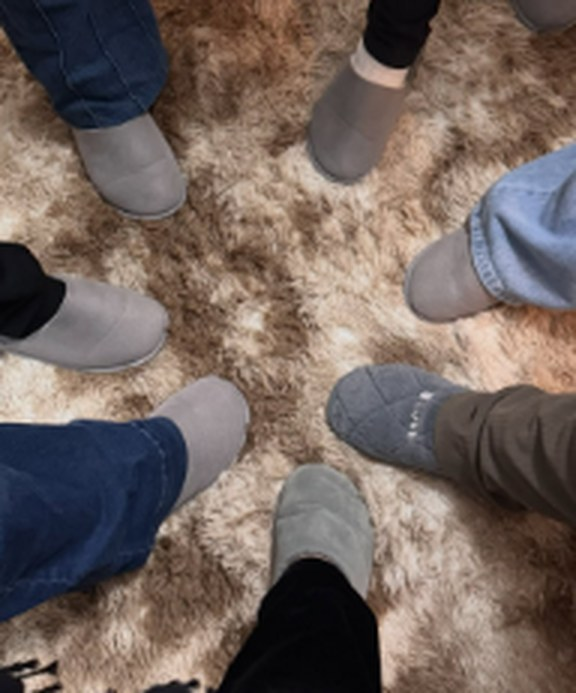
“Constelar é libertar-se do que não te pertence.”
O trabalho principal da casa
Todo mundo carrega alguma coisa guardada. Um assunto que ninguém nomeia, uma ausência que atravessou gerações, uma lealdade invisível que faz você repetir exatamente aquilo de que tentou fugir. A Constelação Familiar é uma vivência em grupo que torna esse campo visível — e, ao ver, você já não precisa mais sustentar sozinha o peso que nunca foi seu.
Na prática: quem constela apresenta o seu tema em poucas palavras. Outras pessoas do grupo são convidadas a ocupar o lugar de membros da sua história — os representantes. A partir dali, o que estava emaranhado se reorganiza. Não há análise, não há julgamento, não há conselho. Há reconhecimento, e o reconhecimento é o que liberta.
Olhar para as raízes não nos prende. Nos fortalece.
Mara Nunes
Você não precisa constelar para ser transformado por um encontro. Muita gente chega como representante, entra no campo pela história de outra pessoa e sai de lá com a própria questão movida de lugar. É por isso que o grupo é semanal: cada quarta é um capítulo novo.
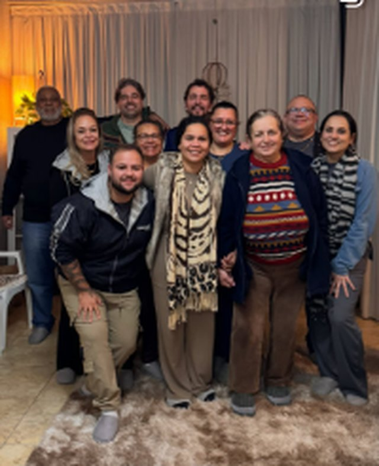
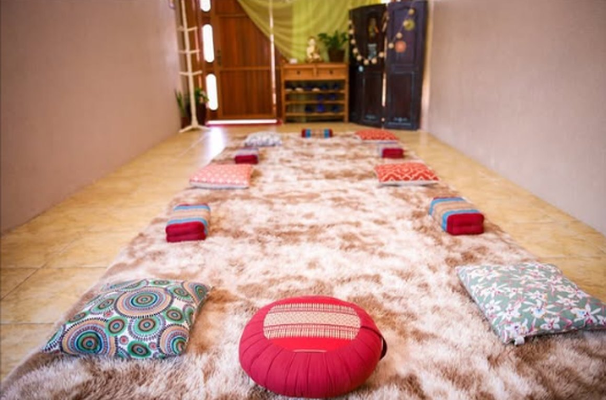
Encontro vivencial · grupo semanal
Chame a Mara direto no WhatsApp — ela mesma responde e confirma a data do próximo encontro.
Do primeiro “oi” até a roda
Uma mensagem basta. Conte em poucas linhas o que te move a procurar — não precisa saber explicar direito.
A Mara indica o caminho: a roda de constelação, um atendimento sistêmico individual ou outra terapia da casa.
As vagas são limitadas e reservadas por ordem de confirmação. Você recebe data, horário e como chegar.
Chegue como está. O grupo se abre, o campo faz o trabalho e você sai leve — presencialmente ou online.
Além da roda de quarta
Online e presencial
Atendimento individual que olha para você dentro do seu sistema — família, trabalho, relações. Ideal para quem quer aprofundar o que a roda mostrou, ou começar por um espaço mais reservado.
AgendarPresencial
Pontos dos pés que conversam com o corpo inteiro. Alívio de tensão, sono melhor e circulação de energia.
AgendarPresencial
O poder das plantas a favor do seu equilíbrio: banhos e preparos de ervas para limpeza, calma e prosperidade.
AgendarPresencial
Um trabalho sutil de reequilíbrio energético, feito na maca, para quem chega sobrecarregado e precisa devolver o corpo ao próprio ritmo.
AgendarA casa também recebe ReikiAtendimento XamânicoBarras de AccessCone ChinêsVentosaterapiaTerapia MultidimensionalAstrologia e Numerologia
Quem conduz
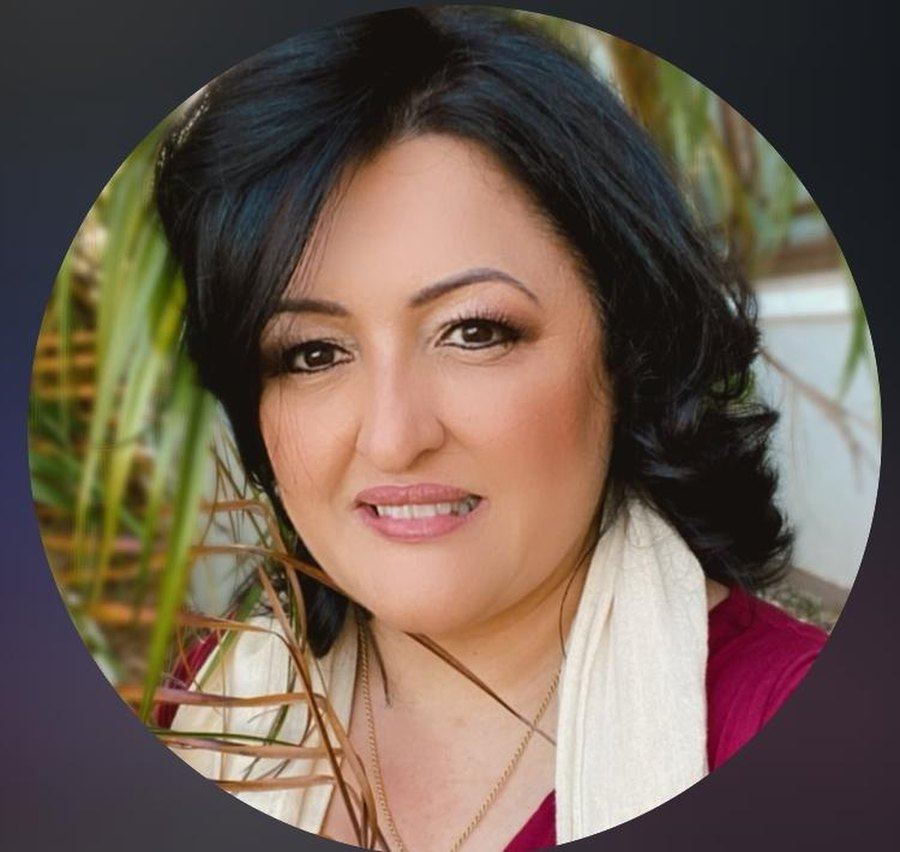
Terapeuta Sistêmica · Facilitadora de Constelação Familiar
Há mais de uma década Mara recebe pessoas no Espaço Sonho e Luz — e o que ela faz não é dar respostas. É abrir espaço para que a resposta apareça.
Especialista no equilíbrio energético, mental e espiritual, Mara conduz a roda de constelação semanal e atende individualmente em Canoas e online. Sua condução é reconhecida por uma característica que aparece em quase todo depoimento: você se sente acolhido antes de se sentir analisado.
Ao lado da constelação, ela trabalha com terapia sistêmica, reflexologia, fitoterapia, terapia âmbrica e outras práticas integrativas — sempre partindo do mesmo princípio: cada pessoa precisa voltar ao seu lugar para que a vida volte a fluir.
Tudo que curamos em nós protege nossos descendentes.
O que dizem sobre o espaço
Uma experiência fantástica! Lugar maravilhoso, uma energia incrível, com paz e harmonia!
Um lugar com energia incrível, atendimento nota 10, você se sente acolhido e em casa.
O melhor espaço de Porto Alegre.
Mara, queria agradecer muito pelos atendimentos e pelo carinho que tu tem a cada sessão. Estou me sentindo cada vez melhor e sinto que minha energia está se mantendo positiva facilmente. Recomendo 100% o espaço para todos que desejam evoluir na melhor companhia possível.
Atendimento xamânico com a Mara: experiência nova e valeu demais. Momentos de paz, senti a limpeza, a energia trocada, fiquei leve. Vale muito a troca. Voltarei!
Estou me sentindo tão bem, e uma paz, tranquilidade indescritível. Gratidão por estar me auxiliando, ajudando na minha caminhada e principalmente me encorajando nestas mudanças.
Não conhecia como funcionava o atendimento. Me senti muito bem desde o início — o espaço todo, cada detalhe faz a diferença. Com certeza retornarei e levarei mais pessoas para conhecer as terapias holísticas do espaço Sonho e Luz!
Boa tarde, Mara. Queria agradecer pelo atendimento de ontem! Estou me sentindo renovada, obrigada pela paciência e dedicação. Dá pra ver o quanto você ama o que faz.
R. da Felicidade, 143 — e o nome não é coincidência
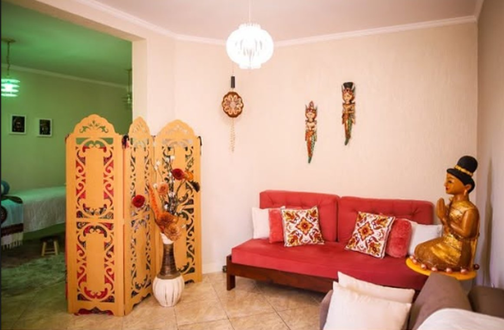
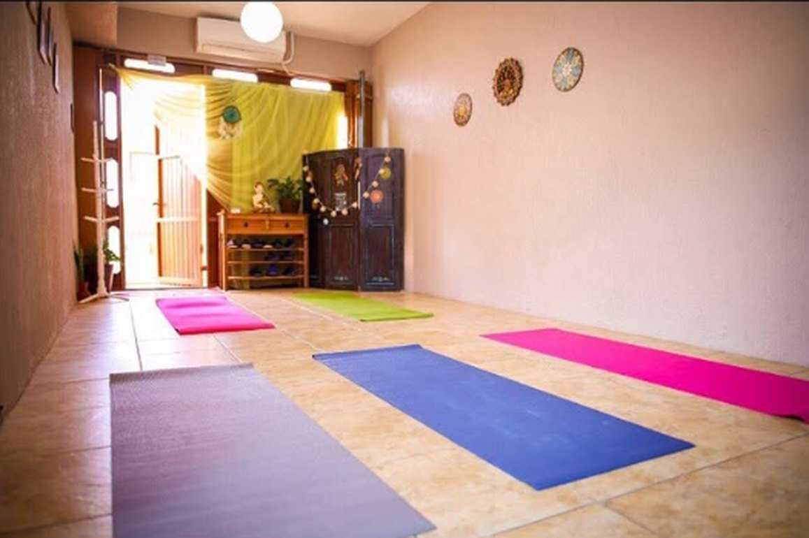
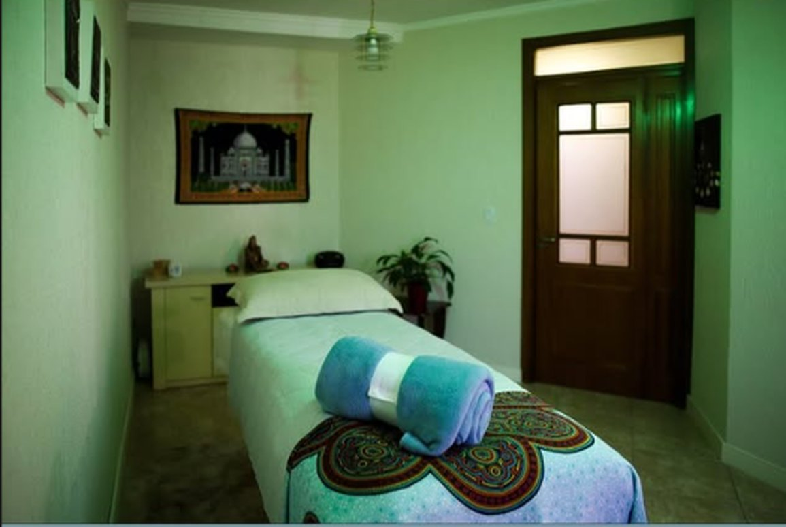
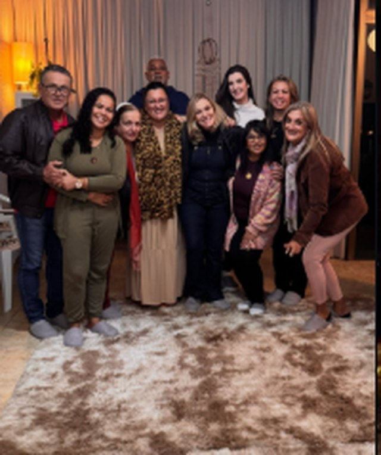
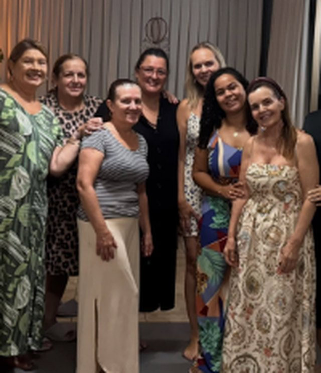
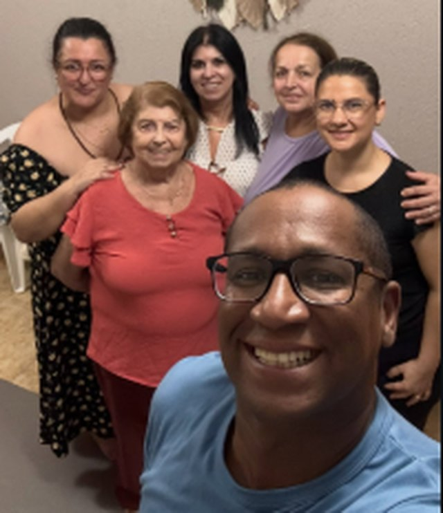
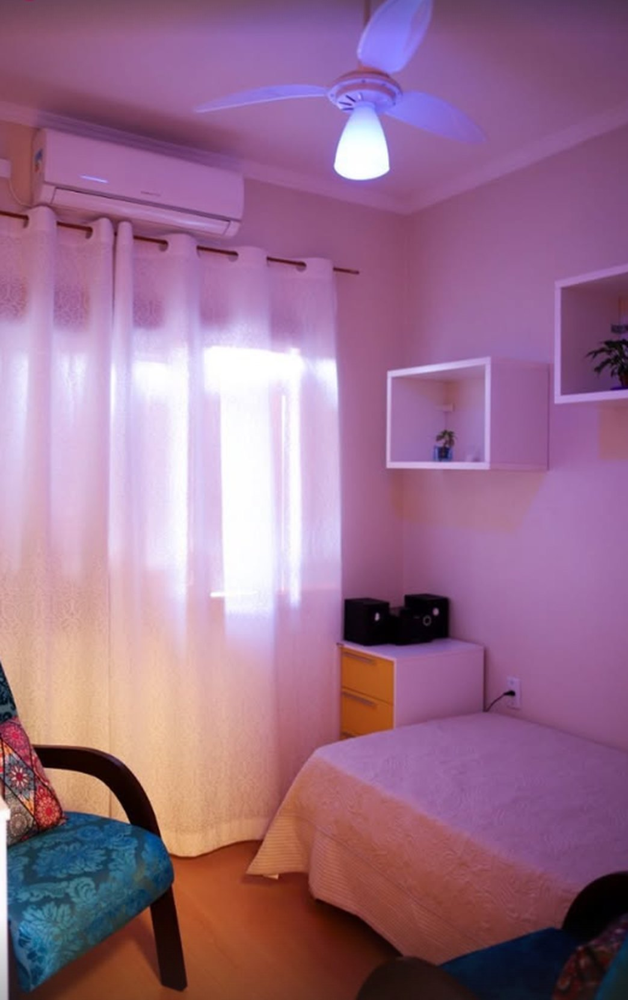
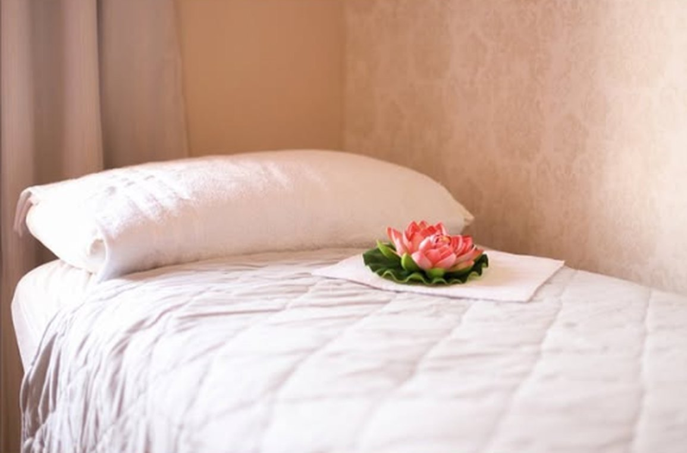
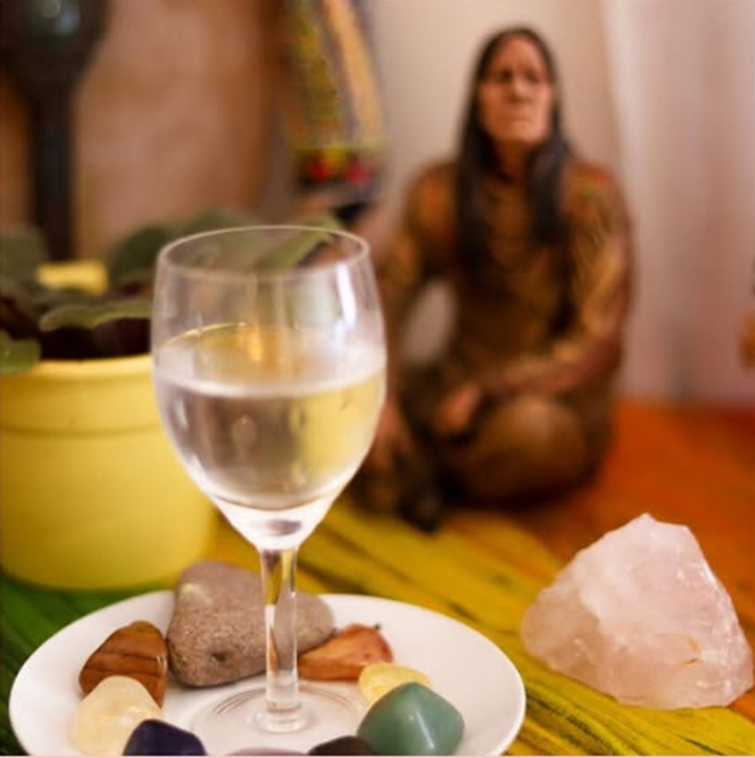
Antes de dar o primeiro passo
Ficou alguma pergunta de fora? Manda pra Mara — ela responde pessoalmente.
Perguntar no WhatsAppÉ uma vivência em grupo que revela as dinâmicas escondidas do seu sistema familiar — aquilo que se repete sem que ninguém tenha escolhido. Quem constela apresenta o tema em poucas palavras; outras pessoas do grupo representam os membros envolvidos, e o campo mostra onde cada um está e onde deveria estar. Não é análise nem conselho: é reconhecimento. E é justamente o reconhecimento que devolve o movimento à sua vida.
Não. A constelação não pede fé, religião ou explicação prévia — ela pede disposição para olhar. A maioria das pessoas chega cética, na dúvida ou só por curiosidade. Você não precisa entender antes: o entendimento costuma vir depois, e por conta própria. Vale para pessoas de qualquer crença, inclusive para quem não tem nenhuma.
Funciona por videochamada, em grupo ou individualmente. No formato online, os representantes podem ser outros participantes na tela ou, no atendimento individual, âncoras e bonecos posicionados pela facilitadora enquanto você acompanha. O campo não depende de estar na mesma sala — ele se organiza pela sua presença e pela sua intenção. Muita gente que atende de outra cidade ou outro estado passa por aqui exatamente assim.
A roda começa às 19h30 e costuma durar cerca de duas a três horas, conforme quantas pessoas constelam na noite. Cada constelação em si é curta — raramente passa de vinte ou trinta minutos —, porque o trabalho para no momento em que a imagem se organiza. Reserve a noite com folga: sair correndo logo depois tira parte do efeito.
Uma constelação continua trabalhando por semanas depois do encontro, então não há necessidade de constelar toda semana o mesmo tema. O ritmo que funciona para a maioria: constelar quando surge uma questão viva, e participar como representante nas outras semanas — porque entrar no campo pela história do outro também move a sua. O grupo acontece toda quarta-feira, e você escolhe em quais estar.
Nada além de você. Venha com roupa confortável — parte do encontro acontece no chão, sobre o tapete — e chegue uns minutos antes para acomodar-se. Não é preciso estudar sobre o tema, montar árvore genealógica nem preparar um relato. Se você vier só como representante, também não precisa dizer nada sobre a sua vida.
Venha nos visitar